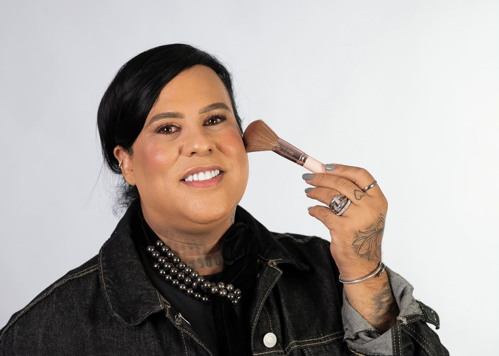
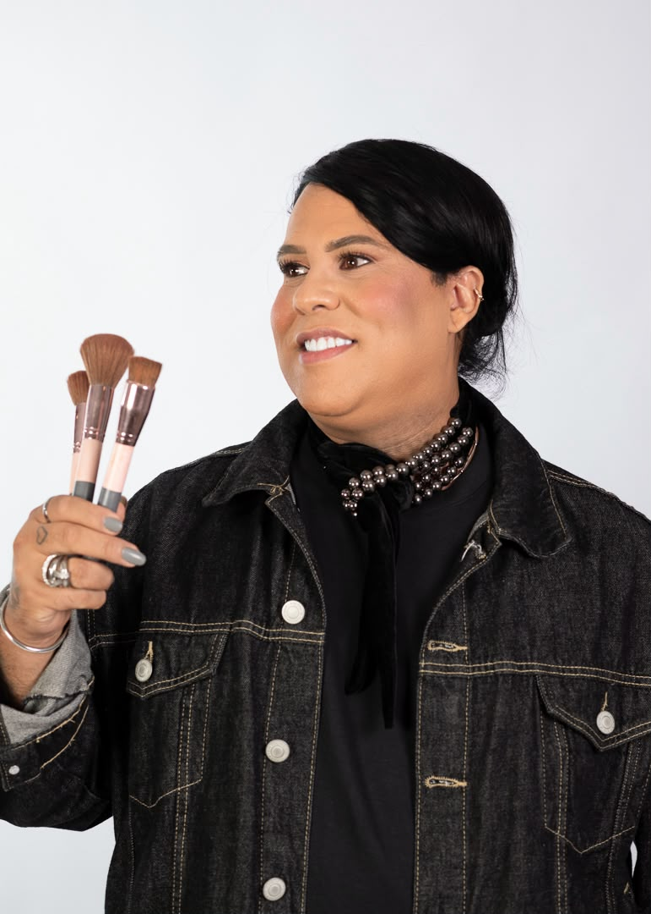

Destaque
Produção em movimento — o glow, o traço e o resultado final.
Maquiador profissional · Recife / PE
Transformando beleza há mais de 10 anos
Glamour, precisão e presença. Maquiagem autoral para eventos, noivas e produções — com atendimento em shoppings, lojas parceiras e sessões exclusivas.


Sobre o profissional
Lucas Moreira é maquiador profissional com mais de 10 anos dedicados à arte de revelar a melhor versão de cada cliente. Já atendeu mais de 100 pessoas — de noivas a produções sociais — e construiu um diferencial raro: trabalhos com famosas e celebridades, prova de excelência sob pressão e olhar de câmera.
Os atendimentos acontecem em shoppings e lojas parceiras, além de sessões próprias e personalizadas. O resultado é sempre o mesmo: maquiagem sofisticada, duradoura e feita para fotografar — e para viver o momento.
Portfólio
Retratos e identidade visual do trabalho — clique para ampliar.
Em movimento
Destaques, transformações e bastidores do atendimento.
Produção em movimento — o glow, o traço e o resultado final.
O processo por trás da transformação: ritmo, técnica e presença.
O que eu faço
Atendimento pensado para o evento, a câmera e a sua rotina.
Maquiagem social de alto impacto para festas, formaturas e noites especiais.
Produção completa para o grande dia: pele luminosa, duração e fotos inesquecíveis.
Olhar de moda para ensaios, campanhas e conteúdos que pedem atitude e precisão.
Atendimento em shoppings e lojas parceiras — praticidade sem abrir mão do glamour.
Sessão exclusiva, alinhada ao seu estilo, ao look e à ocasião.
Experiência com famosas: protocolo VIP, discrição e resultado à prova de palco.
Redes
@lucasmoreiramake
Bastidores, produções e o glow do dia a dia. Toque no botão e abra o perfil.
Seguir @lucasmoreiramakeAgenda aberta
Preencha seus dados e o serviço desejado. Ao enviar, seus dados são organizados automaticamente em uma mensagem de WhatsApp para confirmar o agendamento com Lucas.
Studio